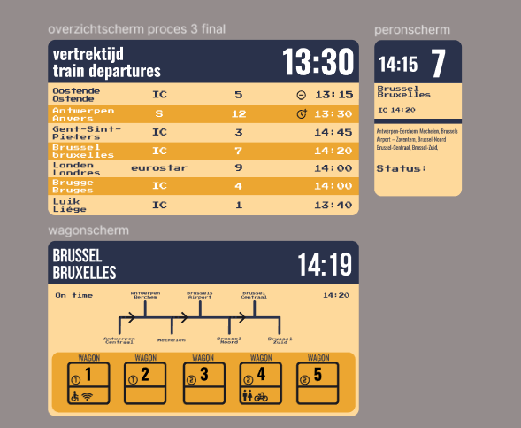
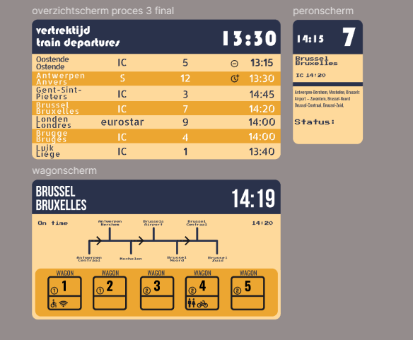
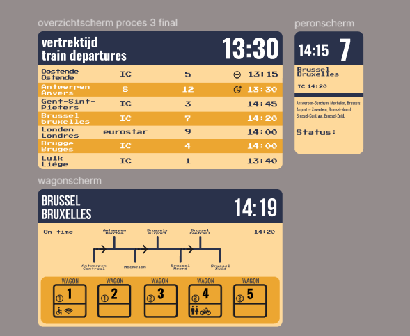
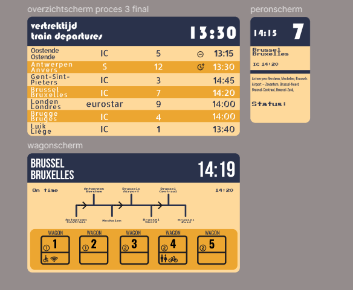

Week 3
Figma mid-fidelity
In week 3 heb ik de wireframes helemaal uitgewerkt in de kleur die ik gekozen heb en heb ik verschillende fonts gebruikt om te zien welke font het beste is. Vervolgens heb ik feedback gevraagd om te bepalen wat het beste leesbaar is en wat er visueel mooi uitziet.
 


